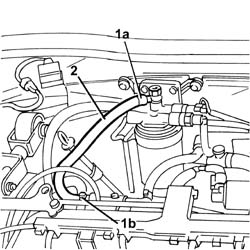

1040B42 SUPPLY PIPE from fuel filter to carburettor/injection device - R.R.
- Path
- Procedures > 10 ENGINE > 1040 FUEL TANK AND PIPES > 1040B PIPE FOR FUEL SUPPLY/RETURN CIRCUIT > 1040B42 SUPPLY PIPE from fuel filter to carburettor/injection device - R.R.
- Kind
- repair procedure (removal / refitting; the operation number is the code)
- Applies to
- engines: 2.4 JTD 10V; all production periods
- Interactive page
- https://sloeber94.github.io/elrnDB-lThss/en/#/98716
Applies to: all engines; all production periods
 Removing
Removing
 Refitting
RefittingSee in Op. 1016A10
1. Disconnect the pipe from the rapid connector (1a) on the filter and from the connector (1b) on the return manifold.
2. Remove the supply pipe from the filter to the return manifold.

Applies to: all engines; all production periods
Refitting
Removing- Position the supply pipe and connect it to the fuel filter and to the fuel manifold.
See in Op. 1016A10